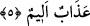
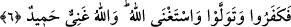
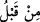

5. Daha önce inkâr edenlerin haberi size ulaşmadı mı? İşte onlar (dünyada)
yaptıklarının cezâsını tattılar. Onlar için acı bir azap da vardır.
Ey kâfirler! “daha önce” yâni sizden önce... “Daha önce” ifâdesi, ‘sizden önce’
anlamına gelebileceği gibi, ‘şu andan önce, şu isyandan ve şu düşmanlıktan önce’
anlamlarına da gelebilir. Bu takdirde dilbilgisine göre “/min kablu” ifâdesi “size
ulaşmadı mı” âyetinin zarfı olmuş olur.
“İnkâr edenlerin haberi” yâni Nuh kavminin ve onlardan sonra gelen ve inkârda
ısrarlı olan milletlerin haberi “size ulaşmadı mı?” Âyetin başında yer alan hemze soru
edatıdır, “lem” ise inkâr mânâsına olup burada tahkik yâni tasdik ve teyid etme
anlamınadır.
“İşte onlar (dünyada) yaptıklarının cezâsını tattılar.” Bu âyetteki “tattılar” ifâdesi,
yukarda geçen “inkâr edenler” fiiline atfedilmiştir. “Tatmak” her ne kadar az bir şeyi
tatmak olarak yaygın ise de çok şey için kullanılır. Arapçada “vebal” demek, herhangi
bir işten sonuçlanan ve ortaya çıkan şiddet ve ağırlıktır. “Vebl” ve “vâbil”, ağır yâni iri
damlalı yağmur, bunun mukabili ‘et-tal’ hafif yağmur demektir. Âyette yer alan
“emruhum” kelimesi ile kasdedilen onların inkârlarıdır. ‘Emr’ kelimesinin çoğulu
‘umûr’dur. İnkârın böyle emr kelimesiyle ifâde edilmesinin sebebi, onun büyük ve
korkunç bir şey, büyük bir cinâyet olduğuna işâret etmek içindir. Buna göre âyetin
mânâsı, onlar dünyada inkârlarının sonucu olan zarar ve ukubeti hiç beklemeksizin
tattılar ve yenilecek nesnelerin tadına bakan kimsenin tattığı gibi tattılar demek olur.
“Sonunda kendi yüklerinin ağırlığını, sonlarının ne kadar zor olacağını, dünyada küfür
içinde olmalarının zararının sarsar rüzgârına gark olmak, âhiret gününün azâbının ise
buna benzer cezâlar olduğunu anladılar.
Âyet-i kerimede “zevk”; yâni tatmak kelimesinin getirilmesinin sebebi, peşinen tadına
bakılan şeyin ilerde âhirette görecekleri azaba oranla hakir değersiz bir şey olduğuna
işâret etmek üzere bir sembol olması dolayısı iledir. Bu nedenle Yüce Allah; “onlar
için” âhirette “acı”, yâni son derece elem verici “bir azap da vardır.” buyurmaktadır.
Bu âyet-i kerimede onların dünyada iken başlarına gelen azâbın günahlarına keffâret
olmayacağı haberi vardır. Çünkü dünyada çektikleri günahlarına keffâret olmuş olsaydı,
âhirette azab edilmezlerdi. Oysa mü’minler bunun tam tersidir. Çünkü mü’minlerin
dünyada iken başlarına gelen elem, acı ve musibetler sahih olarak bizlere kadar ulaşan
haberlere göre günahlarına keffâret olacaktır.
6. (O azâbın sebebi) şu ki, onlara peygamberleri apaçık deliller getirmişlerdi,